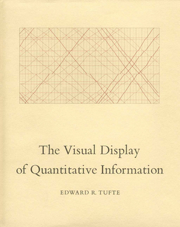

Personal
#
0
1984 (Signet Classics)
A
A
Advancing Democracy Abroad: Why We Should and How We Can (Hoover Studies in Politics, Economics, and Society)
Adventures of Huckleberry Finn
Adventures of Tom Sawyer (Dover Thrift Editions), The
Age of Ambition: Chasing Fortune, Truth, and Faith in the New China
All Quiet on the Western Front
All the Little Live Things
And the Band Played On: Politics, People, and the AIDS Epidemic

Angle of Repose
Anna Karenina
As by Fire

Asian American Dreams: The Emergence of an American People
Asian Americans: The Movement and the Moment
At Canaan's Edge: America in the King Years, 1965-68
Autobiography of Malcolm X: As Told to Alex Haley, The
Autobiography of Martin Luther King, Jr., The
Autumn: Longlisted for the Man Booker Prize 2017 (Seasonal)
B
B
Bad Blood
Barbarian Days: A Surfing Life
Barracoon: The Story of the Last "Black Cargo"
Battle Cry of Freedom: The Civil War Era (Oxford History of the United States)
Becoming
Behind the Beautiful Forevers: Life, Death, and Hope in a Mumbai Undercity

Beloved
Between the World and Me
Bible: A Biography (Books That Changed the World), The
Big Rock Candy Mountain (Contemporary American Fiction), The
Bitter Revolution: China's Struggle with the Modern World (Making of the Modern World), A
Black Album, The
Blue Sweater: Bridging the Gap between Rich and Poor in an Interconnected World, The
Bluest Eye, The
Border of Paradise: A Novel, The
Born to Run
Boyhood: Scenes from Provincial Life
Brave New World
Brief Wondrous Life of Oscar Wao, The
Brother, I'm Dying (Vintage Contemporaries)
Brothers Karamazov, The
Burma: A Nation At The Crossroads
Burmese Days: A Novel
Bury My Heart at Wounded Knee: An Indian History of the American West
Bush
Buying a Fishing Rod for My Grandfather: Stories
C
C
California: A History (Modern Library Chronicles)
Can't Stop Won't Stop
Capital City
Caste
Catch-22: 50th Anniversary Edition
Catcher in the Rye, The
Chen Village: Revolution to Globalization
Chief Seattle and the Town That Took His Name
China Dream
China Men
China Road: A Journey into the Future of a Rising Power
China's Future
Chinese Playground: A Memoir
Churchill and Orwell: The Fight for Freedom
City of Thieves: A Novel
Civil Disobedience
Climate Leviathan
Color of Law: A Forgotten History of How Our Government Segregated America, The
Confederacy of Dunces, A
Control of Nature, The
Country Driving: A Chinese Road Trip
Crime and Punishment (Dover Thrift Editions)
Crossing to Safety
Crucible, The
D
D
Dark Money: The Hidden History of the Billionaires Behind the Rise of the Radical Right
Dead Souls
Death in Mud Lick
Death of a Salesman (Penguin Plays)
Death of Ivan Ilyich and Other Stories (Vintage Classics), The
Defining Decade: Why Your Twenties Matter--And How to Make the Most of Them Now, The
Democracy
Dept. of Speculation
Disappearing Earth

Divided Welfare State: The Battle over Public and Private Social Benefits in the United States, The
Django: The Life and Music of a Gypsy Legend
Drive Your Plow over the Bones of the Dead
Drown
Dubliners (Dover Thrift Editions)
E
E
Economist's Hour, The
Efficiency Paradox: What Big Data Can't Do, The
Emissary, The
Empire of Cotton
Enigma of Clarence Thomas, The
Epic Measures: One Doctor. Seven Billion Patients.
Everybody Lies: Big Data, New Data, and What the Internet Can Tell Us About Who We Really Are
Evicted: Poverty and Profit in the American City
Exhalation
Exit West: A Novel
Exorbitant Privilege: The Rise and Fall of the Dollar and the Future of the International Monetary System
F
F
Fall of Wisconsin: The Conservative Conquest of a Progressive Bastion and the Future of American Politics, The
Farewell To Arms, A
Fault Lines

Fear Itself: The New Deal and the Origins of Our Time
Feather on the Breath of God: A Novel, A
Female Persuasion: A Novel, The
Fire Next Time, The
For Whom the Bell Tolls
Freedom from Fear: The American People in Depression and War, 1929-1945 (Oxford History of the United States)
Fresh Off the Boat: A Memoir
Friend: A Novel, The
Future Is History: How Totalitarianism Reclaimed Russia, The
G
G
Generation Priced Out
Gentleman in Moscow, A
Give Us the Ballot: The Modern Struggle for Voting Rights in America
Go Ahead in the Rain: Notes to A Tribe Called Quest (American Music)
Grapes of Wrath (Centennial Edition), The
Great Gatsby, The
Guns of August, The
H
H
Hacking the Electorate: How Campaigns Perceive Voters
Ham on Rye: A Novel
Hamlet ( Folger Library Shakespeare)
Heart of Darkness (Dover Thrift Editions)
Heart of the World: A Journey to Tibet's Lost Paradise, The
Heartbeat of Wounded Knee: Native America from 1890 to the Present, The
Heavier Than Heaven
Hillbilly Elegy: A Memoir of a Family and Culture in Crisis
Hiroshima
Homage to Catalonia
Homegoing
How Much of These Hills Is Gold
Howards End: Centennial Edition (Signet Classics)
Human Being Died That Night: A South African Woman Confronts the Legacy of Apartheid, A
I
I
I Know Why the Caged Bird Sings
Idealist: Jeffrey Sachs and the Quest to End Poverty, The
Importance of Being Earnest, The
Infinite City: A San Francisco Atlas
Interpreter of Maladies
Irons in the Fire
Is Everyone Hanging Out Without Me? (And Other Concerns)
J
J
Jane Eyre (Dover Thrift Editions)
Janesville: An American Story
Jazz
Joy Luck Club, The
Just Mercy: A Story of Justice and Redemption
K
K
Killers of the Flower Moon: The Osage Murders and the Birth of the FBI
King Lear (Signet Classics)
King of the World: Muhammad Ali and the Rise of an American Hero
Kitchen Confidential : Adventures in the Culinary Underbelly
Know My Name
L
L
Leavers, The
Legends of the Fall
Lenin's Tomb: The Last Days of the Soviet Empire
Liars' Club: A Memoir, The

Liar's Poker

Lincoln in the Bardo
Little Fires Everywhere
Little Life, A
Living, Leading, and the American Dream
Lolita, 50th Anniversary Edition
Lord of the Flies
Lost Children Archive
Lost City of Z, The
Love in the Time of Cholera
Lucky Jim (New York Review Books Classics)
M
M
Macbeth (Folger Shakespeare Library)
Making of Asian America: A History, The
Mao Zedong
March: Book Three

Master and Margarita
Metamorphosis, The
Milkman
Minaret: A Novel
Minor Feelings
Moveable Feast: The Restored Edition, A
Mrs.Dalloway (Collector's Library)
My Invented Country: A Memoir
My People Are Rising: Memoir of a Black Panther Party Captain
N
N
Native Speaker
New Jim Crow, The
Nicaragua: Living in the Shadow of the Eagle
Nickel Boys, The
Night
Night Boat to Tangier
No Enemies, No Hatred: Selected Essays and Poems
No More Boats
Normal People
Notes from a Small Island
Number the Stars
O
O
Of Mice and Men
Old Man and the Sea, The
On Earth We're Briefly Gorgeous
On Fire
On the Road (Penguin Great Books of the 20th Century)
One Day in the Life of Ivan Denisovich: A Novel
One Hundred Years of Solitude
Oracle Bones: A Journey Through Time in China
Orphan Master's Son, The
P
P
Pachinko
Parting the Waters : America in the King Years 1954-63
Party: The Secret World of China's Communist Rulers, The
Passing (Penguin Classics)
People's History of the United States: 1492-Present (Perennial Classics), A
People's Republic of Amnesia: Tiananmen Revisited, The
Picture of Dorian Gray (Dover Thrift Editions), The
Pillar of Fire : America in the King Years 1963-65
Plague, The
Plato Symposium
Politics Is for Power
Portrait of the Artist As a Young Man, A
Postwar: A History of Europe Since 1945
Pride and Prejudice (Dover Thrift Editions)
Prince of the Marshes: And Other Occupational Hazards of a Year in Iraq, The
Princess Bride: S. Morgenstern's Classic Tale of True Love and High Adventure, The
Proud Tower: A Portrait of the World Before the War, 1890-1914, The
Pulphead: Essays
R
R
Radioactive: Marie & Pierre Curie: A Tale of Love and Fallout
Reactionary Mind, The
Reading Lolita in Tehran: A Memoir in Books
Rebel of Rangoon: A Tale of Defiance and Deliverance in Burma, The
Refugees, The
Reinventing Capitalism in the Age of Big Data
Reluctant Fundamentalist, The
River Town: Two Years on the Yangtze (P.S.)

Road from Damascus, The
Road to Inequality: How the Federal Highway Program Polarized America and Undermined Cities, The
Road to Wigan Pier, The
Romeo and Juliet
Room Full of Mirrors: A Biography of Jimi Hendrix
Room of One's Own, A
Rose (New Poets of America)
Rules Of Civility
S
S
S. P. Q. R.
Sag Harbor
Say Nothing
Scarlet Letter (Dover Thrift Editions), The
Sellout, The
Serve the People: Making Asian America in the Long Sixties
She Said
Short and Tragic Life of Robert Peace: A Brilliant Young Man Who Left Newark for the Ivy League, The
Shrill
Sing, Unburied, Sing: A Novel
Slaughterhouse-Five: A Novel
Slouching Towards Bethlehem: Essays (FSG Classics)
Solitary
Song of Solomon
Sound and the Fury: The Corrected Text, The
South Africa: The Rise and Fall of Apartheid (Seminar Studies)
Spectator Bird (Contemporary American Fiction), The
Spirit of Democracy: The Struggle to Build Free Societies Throughout the World, The

Spring
Stoner
Stories of Your Life and Others
Strange Stones: Dispatches from East and West (P.S.)
Stranger, The
Sun Also Rises, The
Swing Time
Sympathizer: A Novel, The
T
T
Table of Contents
Tale of Two Cities (Dover Thrift Editions), A
Territory of Light
Their Eyes Were Watching God: A Novel
There There
They Can't Kill Us Until They Kill Us
Things They Carried, The

This House of Sky
This Is How You Lose Her
This Orient Isle
This Side of Paradise
Thomas Jefferson's Qur'an: Islam and the Founders
Three Lives (Dover Thrift Editions)
Three Men in a Boat and Three Men on the Bummel
Tipping Point: How Little Things Can Make a Big Difference, The
To Kill a Mockingbird
Transcription
Trick Mirror
U
U
Underground Railroad (Oprah's Book Club): A Novel, The
Undoing Project, The
Uninhabitable Earth: Life After Warming, The
V
V

Visit from the Goon Squad, A

Visual Display of Quantitative Information, The
W
W
Waiting
War and Peace (Vintage Classics)
Warmth of Other Suns: The Epic Story of America's Great Migration, The
Watchmen
We Gon' Be Alright
Weimar Republic: The Crisis of Classical Modernity, The

We've Got People
What You Have Heard Is True
When Breath Becomes Air
When Death Takes Something from You, Give It Back

When Half Is Whole: Multiethnic Asian American Identities
Where the Bluebird Sings to the Lemonade Springs: Living and Writing in the West
Whistling Vivaldi: And Other Clues to How Stereotypes Affect Us (Issues of Our Time)
White Teeth
Wild Swans: Three Daughters of China
Winners Take All: The Elite Charade of Changing the World

Winter
Wolf Willow

Woman Warrior, The
Y
Y
Year of Magical Thinking, The
Yellow House, The
Z
Z
Zimmermann Telegram, The